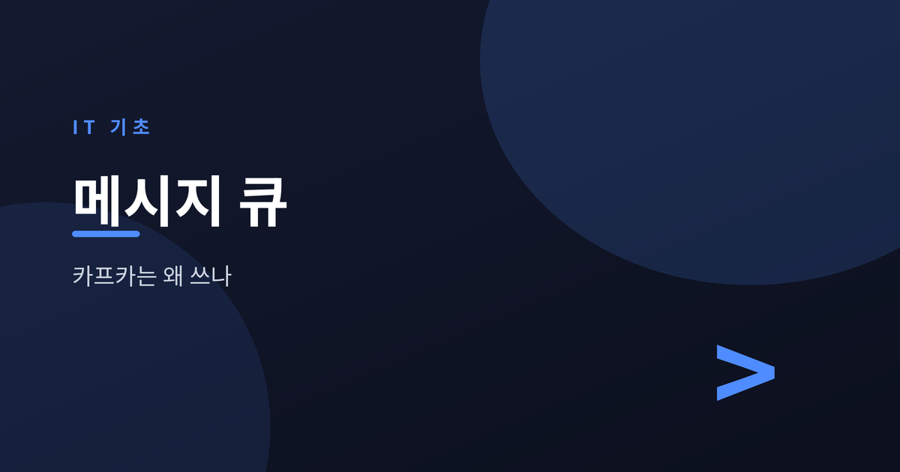
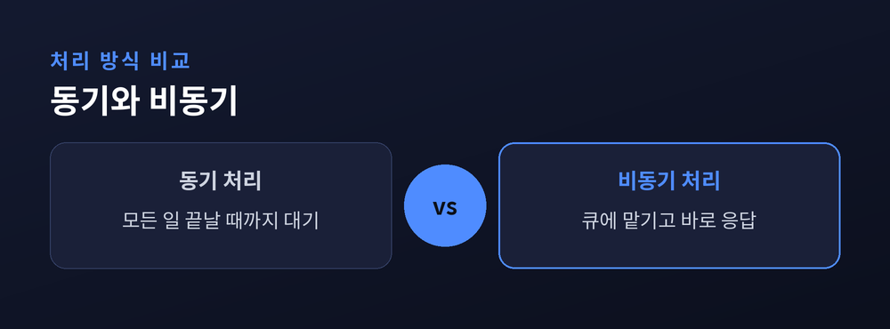
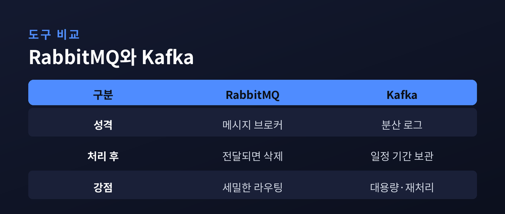
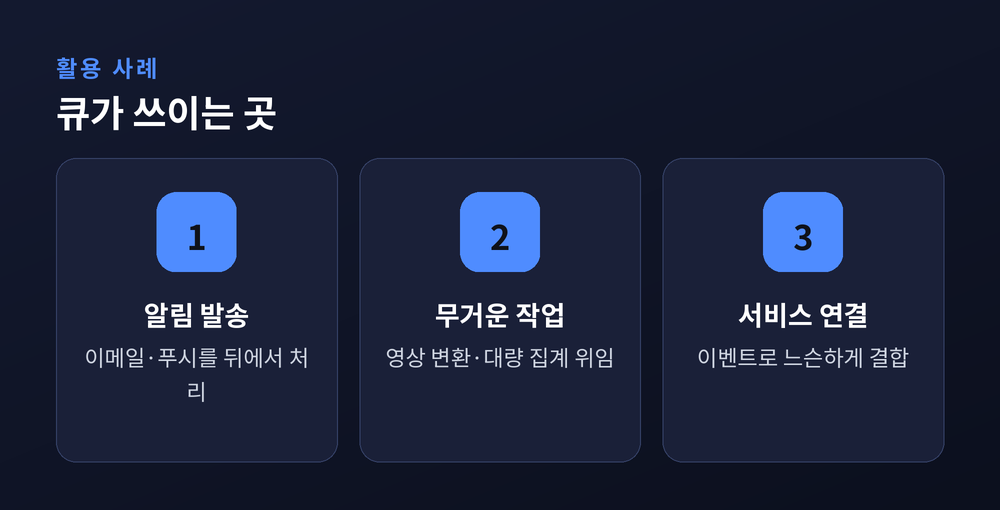

카프카는 왜 쓰나

서비스가 작을 때는 요청을 받으면 그 자리에서 곧바로 처리해도 무리가 없습니다. 그러나 트래픽이 몰리고 처리할 일이 무거워지면, 이 단순한 방식이 곧 병목이 됩니다. 이럴 때 등장하는 것이 메시지 큐와 비동기 처리입니다. 큐가 무엇이고 왜 필요한지, RabbitMQ와 Kafka는 어떻게 다른지 하나씩 정리해 보겠습니다.
동기 처리는 요청을 받은 서버가 모든 일을 끝낼 때까지 응답을 붙잡아 두는 방식입니다. 사용자가 주문을 넣으면 결제, 재고 차감, 알림 발송을 전부 마친 뒤에야 "완료" 화면을 보여줍니다. 알림 서버 하나가 느려지면 그 지연이 사용자 화면까지 그대로 전달됩니다. 처리할 일이 하나라도 무거워지면 전체가 함께 느려지는 셈입니다.

비동기 처리는 이 흐름을 끊어냅니다. 서버는 "할 일이 있다"는 메시지만 큐에 던져두고 곧바로 사용자에게 응답합니다. 실제 작업은 뒤에서 별도의 소비자가 큐를 꺼내 처리합니다.
큐는 생산자와 소비자 사이에 놓인 완충 장치입니다. 요청이 순간적으로 폭주해도 큐가 받아 쌓아두면, 소비자는 감당할 수 있는 속도로 하나씩 꺼내 처리합니다. 예전에는 트래픽이 몰리면 서버가 함께 무너졌습니다. 지금은 큐가 충격을 흡수해 뒤쪽 시스템을 지켜줍니다.
큐는 요청을 버리지 않고 잠시 맡아둡니다. 덕분에 앞단과 뒷단이 서로의 속도에 얽매이지 않습니다.
메시지 큐 도구는 여럿이지만, 결이 다른 두 갈래를 대표하는 것이 RabbitMQ와 Kafka입니다.

RabbitMQ는 전통적인 메시지 브로커입니다. 메시지를 소비자에게 전달하고 나면 큐에서 지워지며, 누구에게 어떻게 보낼지 세밀하게 제어하기에 좋습니다. Kafka는 메시지를 로그처럼 차곡차곡 쌓아두는 구조입니다. 읽어가도 메시지가 사라지지 않아 여러 소비자가 같은 데이터를 각자 읽을 수 있고, 초당 수만 건 이상의 대용량 흐름을 견디도록 설계되었습니다.
| 구분 | RabbitMQ | Kafka |
|---|---|---|
| 성격 | 메시지 브로커 | 분산 로그 |
| 처리 후 | 전달되면 삭제 | 일정 기간 보관 |
| 강점 | 세밀한 라우팅 | 대용량·재처리 |
| 적합한 곳 | 작업 분배·알림 | 로그·이벤트 스트림 |
둘 중 무엇이 낫다고 단정하기는 어렵습니다. 정교한 작업 분배가 필요하면 RabbitMQ가, 대량의 이벤트를 흘려보내고 여러 곳에서 다시 읽어야 하면 Kafka가 어울립니다.

큐는 당장 끝내지 않아도 되는 일을 뒤로 미룰 때 빛을 발합니다. 이메일이나 푸시 알림 발송, 이미지·영상 변환, 대량 데이터 집계 같은 작업이 대표적입니다. 사용자는 요청이 접수됐다는 응답을 즉시 받고, 실제 처리는 뒤에서 조용히 진행됩니다.
시스템을 여러 서비스로 나누는 구조에서도 큐는 중요한 역할을 합니다. 서비스들이 서로 직접 호출하는 대신 이벤트를 큐로 주고받으면, 한쪽이 잠시 멈춰도 다른 쪽이 함께 멈추지 않습니다. 다만 큐를 끼우면 흐름을 한눈에 따라가기 어렵고, 처리 순서나 중복 문제를 따로 신경 써야 합니다. 편의만 있는 것은 아닙니다.
정리하면 이렇습니다.
메시지 큐는 요청과 처리를 떼어놓아, 몰리는 트래픽을 흡수하고 각 부분이 제 속도로 일하게 해줍니다. RabbitMQ는 정교한 전달에, Kafka는 대용량 흐름과 재처리에 강합니다. 물론 구조가 복잡해지고 추적이 어려워지는 대가도 따릅니다.
"큐는 급한 일을 미루는 도구가 아니라, 급하지 않은 일을 제자리에 두는 도구입니다."
당장 응답할 것과 나중에 처리할 것을 나눌 수 있다면, 큐를 한번 얹어 보시길 권합니다.